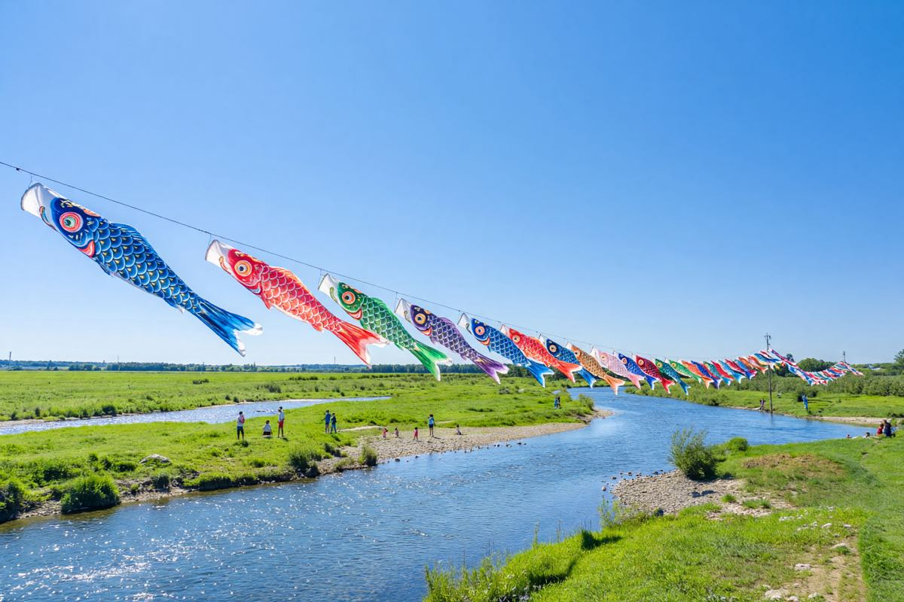

Your garden, your carp
Order a magoi-higoi set, pick a date, and we'll send the raising guide and a windsock sized to your pole. One streamer added for each child, each year.
Find a koinobori raising near you, run your own, and watch your children rise — one streamer a year. Free for every family, every May 5.

Search by your town and the morning you're free. Yaguruma shows the riverside installations, neighbourhood pole-raisings, and kabuto workshops happening near you, with the wind forecast for each one.
Whether it's one pole in the garden or forty over the river, Yaguruma carries the planning so the day stays about the children.
Order a magoi-higoi set, pick a date, and we'll send the raising guide and a windsock sized to your pole. One streamer added for each child, each year.
Log a height, a photo, a first word on every fifth of May. The growth wall stacks the years into one quiet timeline you'll want to keep.
Running a community installation? Invite volunteers, track streamer inventory, and read the wind gauge live from the bank. Free for residents, always.
The carp swims against the current to the top of the falls and turns into a dragon. Every koinobori you raise says the same wish over your child: keep climbing.
Pick a park, riverbank or schoolyard. Yaguruma checks the date against the wind record.
List what you have and what you need; nearby families lend the rest from their own stores.
Share one link. Families reserve a free spot and get the morning's running order.
When the gauge turns, the poles go up together — and the whole street looks up at once.
Workshops, volunteers, streamer inventory and the live wind gauge sit in a single organizer dashboard. Spin up a kabuto-folding table, cap the seats, and let families book themselves in.
Create a free family account, find your first raising, and add this year's streamer to the wall.